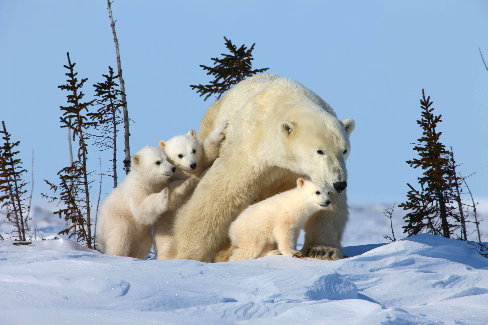
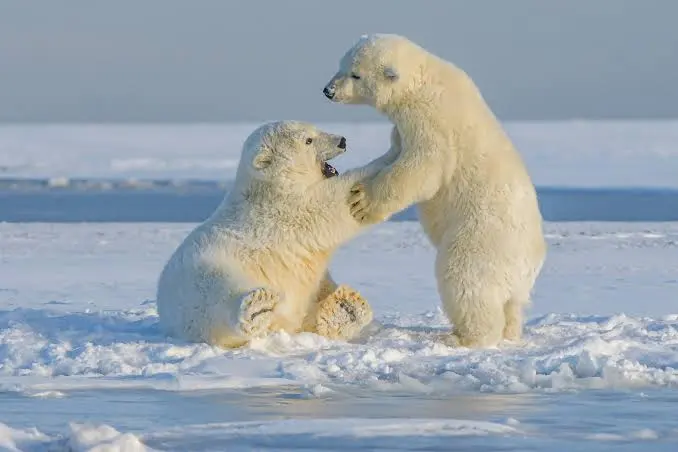
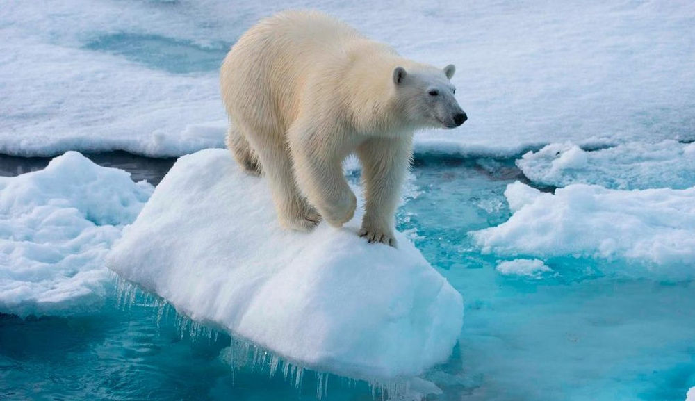

El oso polar (Ursus maritimus) es el depredador terrestre más grande del mundo y habita en las regiones heladas del Círculo Polar Ártico. Está perfectamente adaptado a las temperaturas extremas gracias a una gruesa capa de grasa y un denso pelaje que, aunque parece blanco, en realidad es transparente. Su dieta se basa principalmente en focas, a las que caza esperando cerca de los agujeros de respiración en el hielo marino. Esta especie está clasificada como 'Vulnerable' y es considerada el principal símbolo de los animales amenazados por el cambio climático. La reducción acelerada del hielo marino —su principal plataforma de caza, descanso y reproducción— es su mayor amenaza, forzándolos a nadar distancias más largas y dificultando la obtención de alimento.


